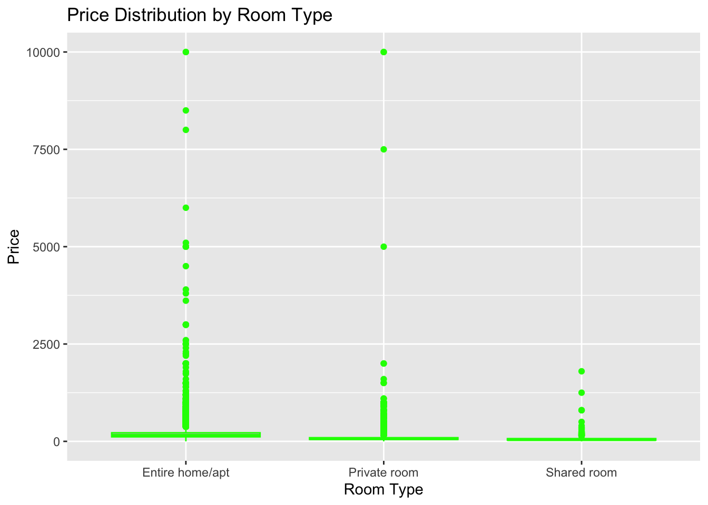
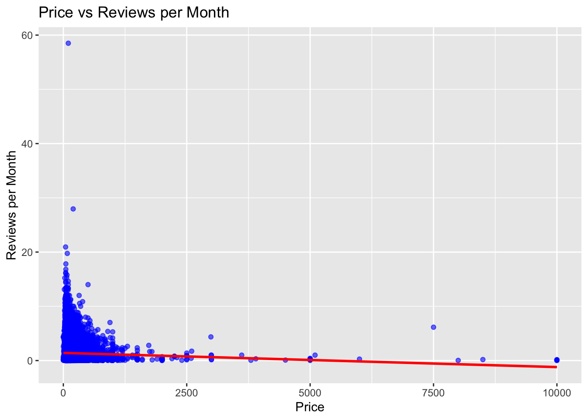
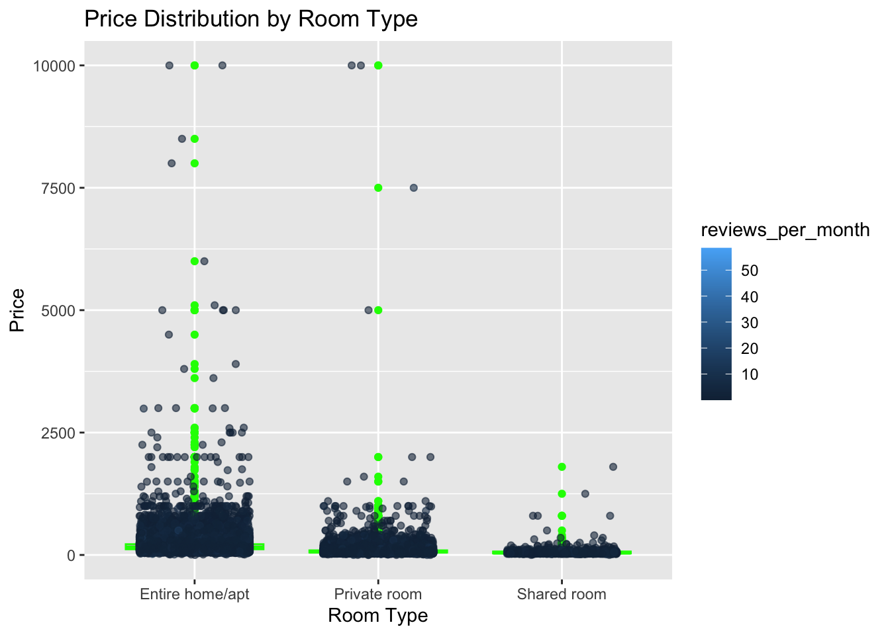

library(tidyverse)
library(ggplot2)
knitr::opts_chunk$set(echo = TRUE, warning=FALSE, message=FALSE)Challenge 7
challenge_7
Jaswanth Reddy Kommuru
AB_NYC_2019
Visualizing Multiple Dimensions
Challenge Overview
Today’s challenge is to:
- read in a data set, and describe the data set using both words and any supporting information (e.g., tables, etc)
- tidy data (as needed, including sanity checks)
- mutate variables as needed (including sanity checks)
- Recreate at least two graphs from previous exercises, but introduce at least one additional dimension that you omitted before using ggplot functionality (color, shape, line, facet, etc) The goal is not to create unneeded chart ink (Tufte), but to concisely capture variation in additional dimensions that were collapsed in your earlier 2 or 3 dimensional graphs.
- Explain why you choose the specific graph type
- If you haven’t tried in previous weeks, work this week to make your graphs “publication” ready with titles, captions, and pretty axis labels and other viewer-friendly features
R Graph Gallery is a good starting point for thinking about what information is conveyed in standard graph types, and includes example R code. And anyone not familiar with Edward Tufte should check out his fantastic books and courses on data visualizaton.
(be sure to only include the category tags for the data you use!)
Read in data
Read in one (or more) of the following datasets, using the correct R package and command.
- eggs ⭐
- abc_poll ⭐⭐
- australian_marriage ⭐⭐
- hotel_bookings ⭐⭐⭐
- air_bnb ⭐⭐⭐
- us_hh ⭐⭐⭐⭐
- faostat ⭐⭐⭐⭐⭐
abnyc_data <- read.csv("_data/AB_NYC_2019.csv")head(abnyc_data) id name host_id host_name
1 2539 Clean & quiet apt home by the park 2787 John
2 2595 Skylit Midtown Castle 2845 Jennifer
3 3647 THE VILLAGE OF HARLEM....NEW YORK ! 4632 Elisabeth
4 3831 Cozy Entire Floor of Brownstone 4869 LisaRoxanne
5 5022 Entire Apt: Spacious Studio/Loft by central park 7192 Laura
6 5099 Large Cozy 1 BR Apartment In Midtown East 7322 Chris
neighbourhood_group neighbourhood latitude longitude room_type price
1 Brooklyn Kensington 40.64749 -73.97237 Private room 149
2 Manhattan Midtown 40.75362 -73.98377 Entire home/apt 225
3 Manhattan Harlem 40.80902 -73.94190 Private room 150
4 Brooklyn Clinton Hill 40.68514 -73.95976 Entire home/apt 89
5 Manhattan East Harlem 40.79851 -73.94399 Entire home/apt 80
6 Manhattan Murray Hill 40.74767 -73.97500 Entire home/apt 200
minimum_nights number_of_reviews last_review reviews_per_month
1 1 9 2018-10-19 0.21
2 1 45 2019-05-21 0.38
3 3 0 NA
4 1 270 2019-07-05 4.64
5 10 9 2018-11-19 0.10
6 3 74 2019-06-22 0.59
calculated_host_listings_count availability_365
1 6 365
2 2 355
3 1 365
4 1 194
5 1 0
6 1 129dim(abnyc_data)[1] 48895 16str(abnyc_data)'data.frame': 48895 obs. of 16 variables:
$ id : int 2539 2595 3647 3831 5022 5099 5121 5178 5203 5238 ...
$ name : chr "Clean & quiet apt home by the park" "Skylit Midtown Castle" "THE VILLAGE OF HARLEM....NEW YORK !" "Cozy Entire Floor of Brownstone" ...
$ host_id : int 2787 2845 4632 4869 7192 7322 7356 8967 7490 7549 ...
$ host_name : chr "John" "Jennifer" "Elisabeth" "LisaRoxanne" ...
$ neighbourhood_group : chr "Brooklyn" "Manhattan" "Manhattan" "Brooklyn" ...
$ neighbourhood : chr "Kensington" "Midtown" "Harlem" "Clinton Hill" ...
$ latitude : num 40.6 40.8 40.8 40.7 40.8 ...
$ longitude : num -74 -74 -73.9 -74 -73.9 ...
$ room_type : chr "Private room" "Entire home/apt" "Private room" "Entire home/apt" ...
$ price : int 149 225 150 89 80 200 60 79 79 150 ...
$ minimum_nights : int 1 1 3 1 10 3 45 2 2 1 ...
$ number_of_reviews : int 9 45 0 270 9 74 49 430 118 160 ...
$ last_review : chr "2018-10-19" "2019-05-21" "" "2019-07-05" ...
$ reviews_per_month : num 0.21 0.38 NA 4.64 0.1 0.59 0.4 3.47 0.99 1.33 ...
$ calculated_host_listings_count: int 6 2 1 1 1 1 1 1 1 4 ...
$ availability_365 : int 365 355 365 194 0 129 0 220 0 188 ...summary(abnyc_data) id name host_id host_name
Min. : 2539 Length:48895 Min. : 2438 Length:48895
1st Qu.: 9471945 Class :character 1st Qu.: 7822033 Class :character
Median :19677284 Mode :character Median : 30793816 Mode :character
Mean :19017143 Mean : 67620011
3rd Qu.:29152178 3rd Qu.:107434423
Max. :36487245 Max. :274321313
neighbourhood_group neighbourhood latitude longitude
Length:48895 Length:48895 Min. :40.50 Min. :-74.24
Class :character Class :character 1st Qu.:40.69 1st Qu.:-73.98
Mode :character Mode :character Median :40.72 Median :-73.96
Mean :40.73 Mean :-73.95
3rd Qu.:40.76 3rd Qu.:-73.94
Max. :40.91 Max. :-73.71
room_type price minimum_nights number_of_reviews
Length:48895 Min. : 0.0 Min. : 1.00 Min. : 0.00
Class :character 1st Qu.: 69.0 1st Qu.: 1.00 1st Qu.: 1.00
Mode :character Median : 106.0 Median : 3.00 Median : 5.00
Mean : 152.7 Mean : 7.03 Mean : 23.27
3rd Qu.: 175.0 3rd Qu.: 5.00 3rd Qu.: 24.00
Max. :10000.0 Max. :1250.00 Max. :629.00
last_review reviews_per_month calculated_host_listings_count
Length:48895 Min. : 0.010 Min. : 1.000
Class :character 1st Qu.: 0.190 1st Qu.: 1.000
Mode :character Median : 0.720 Median : 1.000
Mean : 1.373 Mean : 7.144
3rd Qu.: 2.020 3rd Qu.: 2.000
Max. :58.500 Max. :327.000
NA's :10052
availability_365
Min. : 0.0
1st Qu.: 0.0
Median : 45.0
Mean :112.8
3rd Qu.:227.0
Max. :365.0
Briefly describe the data
The dataset includes information on roughly 49,000 Airbnb rentals in New York City in 2019. The 16 variables that make up each observation, which represents a unique rental unit, include the ID, name, location, host ID and name, room type, price, minimum number of nights for a reservation, number of reviews, last review date, average monthly reviews, calculated count of hosts’ Airbnb listings, and availability.
Tidy Data (as needed)
Is your data already tidy, or is there work to be done? Be sure to anticipate your end result to provide a sanity check, and document your work here.
abnyc_data <- abnyc_data[complete.cases(abnyc_data), ]
abnyc_data <- abnyc_data %>%
mutate(Price_Range = case_when(price > 380 ~ "high", TRUE ~ "low"))Are there any variables that require mutation to be usable in your analysis stream? For example, do you need to calculate new values in order to graph them? Can string values be represented numerically? Do you need to turn any variables into factors and reorder for ease of graphics and visualization?
Document your work here.
Visualization with Multiple Dimensions
ggplot(abnyc_data, aes(x = room_type, y = price)) +
geom_boxplot(fill = "gray", color = "green") +
labs(title = "Price Distribution by Room Type", x = "Room Type", y = "Price")
ggplot(abnyc_data, aes(x = price, y = reviews_per_month)) +
geom_jitter(alpha = 0.6, color = "blue") +
geom_smooth(method = "lm", color = "red", se = FALSE) +
labs(title = "Price vs Reviews per Month", x = "Price", y = "Reviews per Month")
ggplot(abnyc_data, aes(x = room_type, y = price)) +
geom_boxplot(fill = "gray", color = "green") +
geom_jitter(aes(color = reviews_per_month), alpha = 0.6, width = 0.3) +
labs(title = "Price Distribution by Room Type", x = "Room Type", y = "Price")